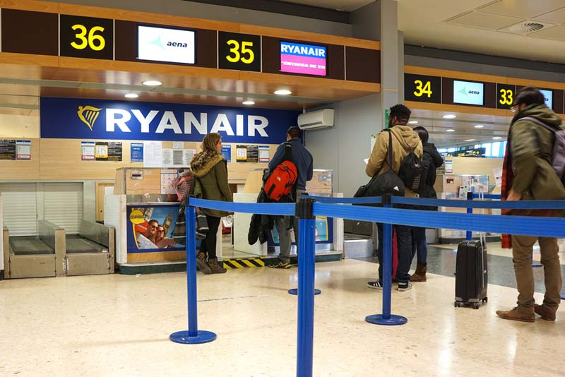

The Nearly-Missed Connection
As told by Hannah, a 24-year-old flight attendant from Georgia.
I left my house at 5:45 a.m. I arrived at the airport at 7:47 a.m. It was an early morning, and I was running late. I rode up the escalator to the main part of the airport where the ticket counter was. I immediately noticed an extremely long line at the ticket counter and thought to myself, “Thank god I don’t have to stand in that!” I walked through all these people and heard the sweetest, broken and most frantic voice. It was like the sound of a lost angel looking for directions.
Flight attendant stories
Her name was Joan. She was shaking so much I had to grab her hand. She asked me if I happened to work for Delta and I said, “Yes, ma’am, I do.” She said, “Oh, can you please help me?” I knew if I stopped to help her I was going to miss my flight, but I told myself not to lose sight of what was important. I walked over to a manual kiosk machine with her and asked if she had her confirmation email. She was shaking so much out of worry, I couldn’t even read her phone, so I took it from her and told her not to fret. Then she started crying. I typed in her confirmation number and it didn’t work. I tried it again. Nothing. I told her I was going to try and check her in on my phone online to see if that worked. BINGO! It did. But then what? I couldn’t print her boarding pass from my phone, and the confirmation number still wouldn’t work on the kiosk. I also couldn’t just give her my phone to go through security because I needed it for my boarding pass. I tried to download the Delta app on her phone, but she couldn’t remember her Apple ID password so it wouldn’t download. So I had another idea. I decided to put her phone number into my phone, send myself the boarding pass through mobile, and then send it to her. WE FINALLY GOT IT. At that point, it was 8:08. Her flight was at 8:27, and mine was at 8:30.
I watched her walk frantically to the security line and thought to myself, “I don’t think I’m supposed to be done with her yet,” so I went up to a security officer and said, “Look. I know this is a stretch, but that woman is my friend Joan, and it would be awesome if she could cut to the front of the line.” The officer kindly escorted Joan to the very front. She was teary-eyed and hugged me and kissed my face. We both made our flights.
.
The Poop Incident Followed by a Contraband Chihuahua
As told by Ciara, a 28-year-old flight attendant from Ireland.
One of the weirdest experiences I’ve had as a flight attendant took place on a flight from Dubai to New York. After we landed, when all the passengers had finally left, my friend and fellow flight attendant went to the bathroom and screamed. She slammed the door open and was like, “Just look in there.” I did. Someone had taken a full on dump ON TOP OF THE TOILET SEAT. We had to go for drinks just to deal with the shock.
Then, on the way back to Dubai, we had a half-empty flight. We were delighted. We loaded everyone on and got ready for takeoff. As soon as we were about to hit the runway, the captain notified us that there was a dog on board so we were going to have to turn back. Now, I know dogs are allowed on most U.S. flights, but on a 14-hour flight, they are prohibited. In fact, the only animals allowed on Emirates flights are falcons, not dogs. So we returned to the airport and security came onto the plane. Turns out a couple smuggled on their chihuahua in a handbag. He started barking and that’s how he was discovered. Security removed the couple. By that point, all the other passengers were extremely disgruntled, even though everyone had four seats to themselves.